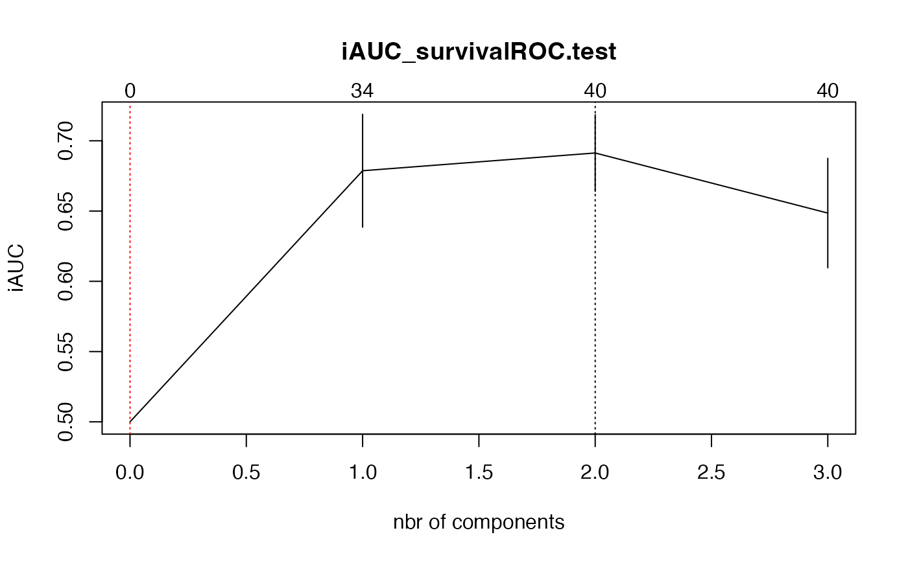

This function cross-validates coxsplsDR models.
cv.coxsplsDR(
data,
method = c("efron", "breslow"),
nfold = 5,
nt = 10,
eta = 0.5,
plot.it = TRUE,
se = TRUE,
givefold,
scaleX = TRUE,
scaleY = FALSE,
folddetails = FALSE,
allCVcrit = FALSE,
details = FALSE,
namedataset = "data",
save = FALSE,
verbose = TRUE,
...
)A list of three items:
A character string specifying the method for tie handling. If there are no tied death times all the methods are equivalent. The Efron approximation is used as the default here, it is more accurate when dealing with tied death times, and is as efficient computationally.
The number of folds to use to perform the cross-validation process.
The number of components to include in the model. It this is not supplied, 10 components are fitted.
Thresholding parameter. eta should be between 0 and 1.
Shall the results be displayed on a plot ?
Should standard errors be plotted ?
Explicit list of omited values in each fold can be provided using this argument.
Shall the predictors be standardized ?
Should the time values be standardized ?
Should values and completion status for each folds be returned ?
Should the other 13 CV criteria be evaled and returned ?
Should all results of the functions that perform error computations be returned ?
Name to use to craft temporary results names
Should temporary results be saved ?
Should some CV details be displayed ?
Other arguments to pass to coxsplsDR.
The number of components requested
Vector with the mean values, across folds, of, per fold unit, Cross-validated log-partial-likelihood for models with 0 to nt components.
Vector with the mean values, across folds, of, per fold unit, van Houwelingen Cross-validated log-partial-likelihood for models with 0 to nt components.
Vector with the mean values, across folds, of iAUC_CD for models with 0 to nt components.
Vector with the mean values, across folds, of iAUC_hc for models with 0 to nt components.
Vector with the mean values, across folds, of iAUC_sh for models with 0 to nt components.
Vector with the mean values, across folds, of iAUC_Uno for models with 0 to nt components.
Vector with the mean values, across folds, of iAUC_hz.train for models with 0 to nt components.
Vector with the mean values, across folds, of iAUC_hz.test for models with 0 to nt components.
Vector with the mean values, across folds, of iAUC_survivalROC.train for models with 0 to nt components.
Vector with the mean values, across folds, of iAUC_survivalROC.test for models with 0 to nt components.
Vector with the mean values, across folds, of iBrierScore unw for models with 0 to nt components.
Vector with the mean values, across folds, of iSchmidScore (robust BS) unw for models with 0 to nt components.
Vector with the mean values, across folds, of iBrierScore w for models with 0 to nt components.
Vector with the mean values, across folds, of iSchmidScore (robust BS) w for models with 0 to nt components.
Vector with the standard error values, across folds, of, per fold unit, Cross-validated log-partial-likelihood for models with 0 to nt components.
Vector with the standard error values, across folds, of, per fold unit, van Houwelingen Cross-validated log-partial-likelihood for models with 0 to nt components.
Vector with the standard error values, across folds, of iAUC_CD for models with 0 to nt components.
Vector with the standard error values, across folds, of iAUC_hc for models with 0 to nt components.
Vector with the standard error values, across folds, of iAUC_sh for models with 0 to nt components.
Vector with the standard error values, across folds, of iAUC_Uno for models with 0 to nt components.
Vector with the standard error values, across folds, of iAUC_hz.train for models with 0 to nt components.
Vector with the standard error values, across folds, of iAUC_hz.test for models with 0 to nt components.
Vector with the standard error values, across folds, of iAUC_survivalROC.train for models with 0 to nt components.
Vector with the standard error values, across folds, of iAUC_survivalROC.test for models with 0 to nt components.
Vector with the standard error values, across folds, of iBrierScore unw for models with 0 to nt components.
Vector with the standard error values, across folds, of iSchmidScore (robust BS) unw for models with 0 to nt components.
Vector with the standard error values, across folds, of iBrierScore w for models with 0 to nt components.
Vector with the standard error values, across folds, of iSchmidScore (robust BS) w for models with 0 to nt components.
Explicit list of the values that were omited values in each fold.
Vector with the standard error values, across folds, of, per fold unit, Cross-validated log-partial-likelihood for models with 0 to nt components.
Vector with the standard error values, across folds, of, per fold unit, van Houwelingen Cross-validated log-partial-likelihood for models with 0 to nt components.
Optimal Nbr of components, min Cross-validated log-partial-likelihood criterion.
Optimal Nbr of components, min+1se Cross-validated log-partial-likelihood criterion.
Optimal Nbr of components, min van Houwelingen Cross-validated log-partial-likelihood.
Optimal Nbr of components, min+1se van Houwelingen Cross-validated log-partial-likelihood.
Optimal Nbr of components, max iAUC_CD criterion.
Optimal Nbr of components, max+1se iAUC_CD criterion.
Optimal Nbr of components, max iAUC_hc criterion.
Optimal Nbr of components, max+1se iAUC_hc criterion.
Optimal Nbr of components, max iAUC_sh criterion.
Optimal Nbr of components, max+1se iAUC_sh criterion.
Optimal Nbr of components, max iAUC_Uno criterion.
Optimal Nbr of components, max+1se iAUC_Uno criterion.
Optimal Nbr of components, max iAUC_hz.train criterion.
Optimal Nbr of components, max+1se iAUC_hz.train criterion.
Optimal Nbr of components, max iAUC_hz.test criterion.
Optimal Nbr of components, max+1se iAUC_hz.test criterion.
Optimal Nbr of components, max iAUC_survivalROC.train criterion.
Optimal Nbr of components, max+1se iAUC_survivalROC.train criterion.
Optimal Nbr of components, max iAUC_survivalROC.test criterion.
Optimal Nbr of components, max+1se iAUC_survivalROC.test criterion.
Optimal Nbr of components, min iBrierScore unw criterion.
Optimal Nbr of components, min+1se iBrierScore unw criterion.
Optimal Nbr of components, min iSchmidScore unw criterion.
Optimal Nbr of components, min+1se iSchmidScore unw criterion.
Optimal Nbr of components, min iBrierScore w criterion.
Optimal Nbr of components, min+1se iBrierScore w criterion.
Optimal Nbr of components, min iSchmidScore w criterion.
Optimal Nbr of components, min+1se iSchmidScore w criterion.
If
details=TRUE, matrices with the error values for every folds across
each of the components and each of the criteria
If
details=TRUE, matrices with logical values for every folds across
each of the components and each of the criteria: TRUE if the
computation was completed and FALSE it is failed.
All results of the functions that perform error computation, for each fold, each component and error criterion.
It only computes the recommended iAUCSurvROC criterion. Set
allCVcrit=TRUE to retrieve the 13 other ones.
plsRcox, Cox-Models in a high dimensional setting in R, Frederic
Bertrand, Philippe Bastien, Nicolas Meyer and Myriam Maumy-Bertrand (2014).
Proceedings of User2014!, Los Angeles, page 152.
Deviance residuals-based sparse PLS and sparse kernel PLS regression for censored data, Philippe Bastien, Frederic Bertrand, Nicolas Meyer and Myriam Maumy-Bertrand (2015), Bioinformatics, 31(3):397-404, doi:10.1093/bioinformatics/btu660.
Cross validating extensions of kernel, sparse or regular partial least squares regression models to censored data, Bertrand, F., Bastien, Ph. and Maumy-Bertrand, M. (2018), https://arxiv.org/abs/1810.01005.
See Also coxsplsDR
data(micro.censure)
data(Xmicro.censure_compl_imp)
set.seed(123456)
X_train_micro <- apply((as.matrix(Xmicro.censure_compl_imp)),FUN="as.numeric",MARGIN=2)[1:80,]
X_train_micro_df <- data.frame(X_train_micro)
Y_train_micro <- micro.censure$survyear[1:80]
C_train_micro <- micro.censure$DC[1:80]
#Should be run with a higher value of nt (at least 10) and a grid of eta
(cv.coxsplsDR.res=cv.coxsplsDR(list(x=X_train_micro,time=Y_train_micro,
status=C_train_micro),nt=3,eta=.1))
#> Warning: no non-missing arguments to min; returning Inf
#> Warning: no non-missing arguments to min; returning Inf
#> Warning: no non-missing arguments to min; returning Inf
#> CV Fold 1
#> Warning: no non-missing arguments to min; returning Inf
#> Warning: no non-missing arguments to min; returning Inf
#> Warning: no non-missing arguments to min; returning Inf
#> CV Fold 2
#> Warning: no non-missing arguments to min; returning Inf
#> Warning: no non-missing arguments to min; returning Inf
#> Warning: no non-missing arguments to min; returning Inf
#> CV Fold 3
#> Warning: no non-missing arguments to min; returning Inf
#> Warning: no non-missing arguments to min; returning Inf
#> Warning: no non-missing arguments to min; returning Inf
#> Warning: no non-missing arguments to min; returning Inf
#> Warning: no non-missing arguments to min; returning Inf
#> Warning: no non-missing arguments to min; returning Inf
#> Warning: no non-missing arguments to min; returning Inf
#> CV Fold 4
#> Warning: no non-missing arguments to min; returning Inf
#> CV Fold 5

#> $nt
#> [1] 3
#>
#> $cv.error10
#> [1] 0.5000000 0.6786893 0.6913293 0.6485690
#>
#> $cv.se10
#> [1] 0.00000000 0.04017423 0.02726346 0.03897730
#>
#> $folds
#> $folds$`1`
#> [1] 60 3 2 14 77 6 50 4 72 32 22 1 41 21 63 25
#>
#> $folds$`2`
#> [1] 42 67 65 15 73 48 57 26 7 13 31 53 5 27 37 64
#>
#> $folds$`3`
#> [1] 71 23 56 35 75 29 30 18 62 44 12 33 68 49 43 55
#>
#> $folds$`4`
#> [1] 54 76 24 16 34 66 9 11 69 40 70 36 39 8 19 20
#>
#> $folds$`5`
#> [1] 74 38 46 80 47 78 10 45 51 28 61 79 58 17 52 59
#>
#>
#> $lambda.min10
#> [1] 2
#>
#> $lambda.1se10
#> [1] 0
#>
#> $nzb
#> [1] 0 34 40 40
#>